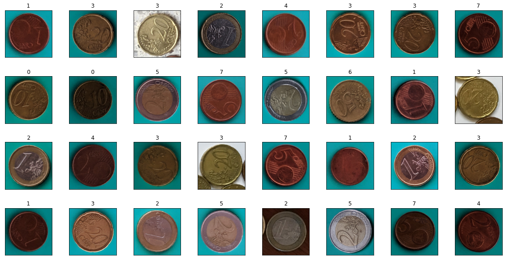
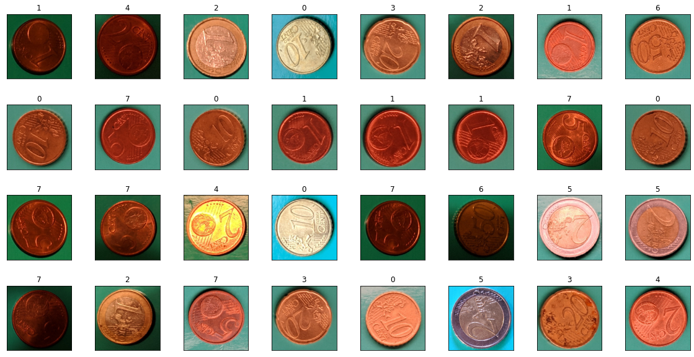
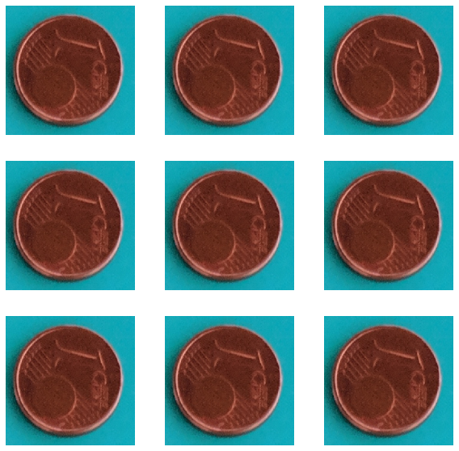
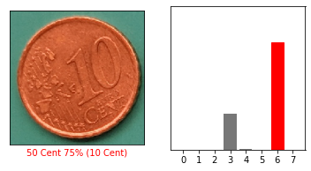
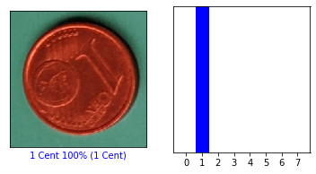
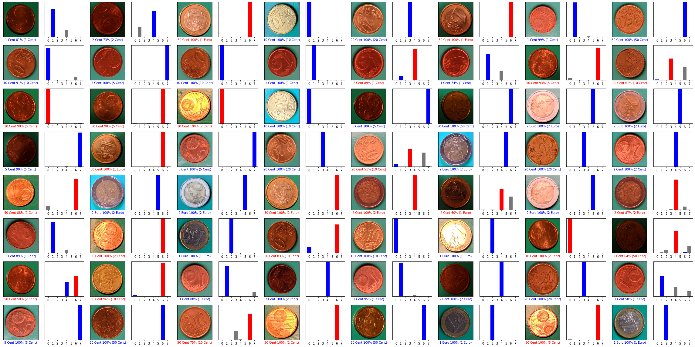

First Try
First Try¶
Data From
https://github.com/kaa/coins-dataset
import tensorflow as tf
from tensorflow import keras
from keras import layers
from keras.preprocessing.image import ImageDataGenerator
import matplotlib.pyplot as plt
import numpy as np
---------------------------------------------------------------------------
ModuleNotFoundError Traceback (most recent call last)
Input In [1], in <cell line: 1>()
----> 1 import tensorflow as tf
2 from tensorflow import keras
3 from keras import layers
ModuleNotFoundError: No module named 'tensorflow'
Create Train and Test Data
explanation: https://machinelearningmastery.com/how-to-load-large-datasets-from-directories-for-deep-learning-with-keras/
?Größe von Train und Test Data nachfragen?
s. Dog_Cats
datagen=ImageDataGenerator(rescale=1./255,
validation_split=0.20)
batch_size=64
data_dir = 'new_extended_dataset/original'
target_size = 200
train_data = datagen.flow_from_directory(data_dir,
target_size=(target_size,target_size),
class_mode="categorical",
batch_size=batch_size,
subset="training")
val_data = datagen.flow_from_directory(data_dir,
target_size=(target_size,target_size),
class_mode="categorical",
batch_size=batch_size,
subset="validation")
Found 7734 images belonging to 8 classes.
Found 1930 images belonging to 8 classes.
train_images, train_labels = train_data.next()
val_images, val_labels = val_data.next()
print(train_images.shape, train_images.dtype)
print(val_images.shape, val_images.dtype)
train_labels_shaped = np.array([])
for i in train_labels:
i = np.where(i == 1)
train_labels_shaped = np.append([train_labels_shaped],[i])
val_labels_shaped = np.array([])
for i in val_labels:
i = np.where(i == 1)
val_labels_shaped = np.append([val_labels_shaped],[i])
train_labels_shaped = train_labels_shaped.astype("uint8")
val_labels_shaped = val_labels_shaped.astype("uint8")
print(train_labels.shape)
print(val_labels.shape)
print(train_labels_shaped.shape)
print(val_labels_shaped.shape)
print(np.bincount(train_labels_shaped))
print(np.bincount(val_labels_shaped))
(64, 200, 200, 3) float32
(64, 200, 200, 3) float32
(64, 8)
(64, 8)
(64,)
(64,)
[ 5 7 9 13 7 7 3 13]
[10 10 9 4 9 8 5 9]
fig1 = plt.figure(figsize=(20,10))
fig1.subplots_adjust(wspace=0.2, hspace=0.4)
# Lets show the first 32 images of a batch
for i, img in enumerate(train_images[:32]):
ax = fig1.add_subplot(4, 8, i + 1, xticks=[], yticks=[])
ax.imshow(img)
plt.title(np.argmax(train_labels[i]))

fig2 = plt.figure(figsize=(20,10))
fig2.subplots_adjust(wspace=0.2, hspace=0.4)
# Lets show the first 32 images of a batch
for i, img in enumerate(val_images[:32]):
ax = fig2.add_subplot(4, 8, i + 1, xticks=[], yticks=[])
ax.imshow(img)
plt.title(np.argmax(val_labels[i]))

Preprocessing
train_ds = tf.data.Dataset.from_generator(
lambda: train_data,
output_types = (tf.float32, tf.uint8),
output_shapes = ([None, target_size, target_size, 3], [None, 8]),
)
print(train_ds)
<FlatMapDataset element_spec=(TensorSpec(shape=(None, 200, 200, 3), dtype=tf.float32, name=None), TensorSpec(shape=(None, 8), dtype=tf.uint8, name=None))>
val_ds = tf.data.Dataset.from_generator(
lambda: val_data,
output_types = (tf.float32, tf.uint8),
output_shapes = ([None, target_size, target_size, 3], [None, 8]),
)
print(val_ds)
<FlatMapDataset element_spec=(TensorSpec(shape=(None, 200, 200, 3), dtype=tf.float32, name=None), TensorSpec(shape=(None, 8), dtype=tf.uint8, name=None))>
Works sometimes (Beim ersten ausführen oder nach einem Restart)
Links for data_augmentation:
https://www.tensorflow.org/tutorials/images/data_augmentation
data_augmentation = keras.Sequential([
layers.RandomFlip("horizontal_and_vertical"),
layers.RandomRotation(0.2),
#layers.RandomContrast(factor=0.5),
])
#works sometimes (First try & Restart)
plt.figure(figsize=(10, 10))
for images, _ in train_ds.take(1):
for i in range(9):
augmented_images = data_augmentation(images)
ax = plt.subplot(3, 3, i + 1, xticks=[], yticks=[])
plt.imshow(augmented_images[0])
plt.axis("off")

Modelbuilding
# provide (image_height, image_width, image_channels)
inputs = keras.Input(shape=(target_size,target_size, 3))
#Nur mit Datasets möglich (nicht mit DirectoryIterator)
x = data_augmentation(inputs)
x = layers.Conv2D(filters=16, kernel_size=3, activation="relu")(x)
x = layers.MaxPooling2D(pool_size=2)(x)
x = layers.Conv2D(filters=32, kernel_size=3, activation="relu")(x)
x = layers.MaxPooling2D(pool_size=2)(x)
x = layers.Conv2D(filters=64, kernel_size=3, activation="relu")(x)
x = layers.MaxPooling2D(pool_size=2)(x)
x = layers.Conv2D(filters=128, kernel_size=3, activation="relu")(x)
x = layers.MaxPooling2D(pool_size=2)(x)
x = layers.Conv2D(filters=256, kernel_size=3, activation="relu")(x)
x = layers.MaxPooling2D(pool_size=2)(x)
x = layers.Conv2D(filters=512, kernel_size=3, activation="relu")(x)
x = layers.SpatialDropout2D(0.5)(x)
#Flatten oder GlobalAveragePooling2D s. https://stackoverflow.com/questions/49295311/what-is-the-difference-between-flatten-and-globalaveragepooling2d-in-keras
#GlobalAveragePooling2D gut gegen overfitting
#x = layers.GlobalAveragePooling2D()(x)
x = layers.Flatten()(x)
#x = layers.Dense(32, activation='relu')(x)
# use softmax activation
outputs = layers.Dense(8, activation="softmax")(x)
# define inputs and outputs
model = keras.Model(inputs=inputs, outputs=outputs)
model.summary()
#for filter in [128,64,32]:
# x = layers.Conv2D(filters=filter, kernel_size=3, activation="relu")(x)
# x = layers.MaxPooling2D(pool_size=2)(x)
Model: "model_1"
_________________________________________________________________
Layer (type) Output Shape Param #
=================================================================
input_4 (InputLayer) [(None, 200, 200, 3)] 0
sequential_3 (Sequential) (None, 200, 200, 3) 0
conv2d_18 (Conv2D) (None, 198, 198, 16) 448
max_pooling2d_15 (MaxPoolin (None, 99, 99, 16) 0
g2D)
conv2d_19 (Conv2D) (None, 97, 97, 32) 4640
max_pooling2d_16 (MaxPoolin (None, 48, 48, 32) 0
g2D)
conv2d_20 (Conv2D) (None, 46, 46, 64) 18496
max_pooling2d_17 (MaxPoolin (None, 23, 23, 64) 0
g2D)
conv2d_21 (Conv2D) (None, 21, 21, 128) 73856
max_pooling2d_18 (MaxPoolin (None, 10, 10, 128) 0
g2D)
conv2d_22 (Conv2D) (None, 8, 8, 256) 295168
max_pooling2d_19 (MaxPoolin (None, 4, 4, 256) 0
g2D)
conv2d_23 (Conv2D) (None, 2, 2, 512) 1180160
spatial_dropout2d_1 (Spatia (None, 2, 2, 512) 0
lDropout2D)
flatten_1 (Flatten) (None, 2048) 0
dense_1 (Dense) (None, 8) 16392
=================================================================
Total params: 1,589,160
Trainable params: 1,589,160
Non-trainable params: 0
_________________________________________________________________
# use rmsprop
model.compile(optimizer="adam",
loss="categorical_crossentropy",
metrics=["accuracy"])
Model training
# Training für Dataset
epochs=50
history = model.fit(train_ds,
#Steps_per_epoch nötig ansonsten n/unknown for infinity
steps_per_epoch = train_data.samples // batch_size,
validation_data = val_ds,
validation_steps = val_data.samples // batch_size,
epochs =epochs)
Epoch 1/50
120/120 [==============================] - 122s 1s/step - loss: 1.3068 - accuracy: 0.4587 - val_loss: 1.8209 - val_accuracy: 0.4025
Epoch 2/50
120/120 [==============================] - 116s 970ms/step - loss: 0.8143 - accuracy: 0.6385 - val_loss: 2.0356 - val_accuracy: 0.4250
Epoch 3/50
120/120 [==============================] - 116s 971ms/step - loss: 0.7018 - accuracy: 0.7001 - val_loss: 2.3679 - val_accuracy: 0.4930
Epoch 4/50
120/120 [==============================] - 116s 969ms/step - loss: 0.5895 - accuracy: 0.7524 - val_loss: 1.9564 - val_accuracy: 0.5086
Epoch 5/50
120/120 [==============================] - 117s 974ms/step - loss: 0.4712 - accuracy: 0.8089 - val_loss: 2.3587 - val_accuracy: 0.5011
Epoch 6/50
120/120 [==============================] - 125s 1s/step - loss: 0.4142 - accuracy: 0.8366 - val_loss: 2.4615 - val_accuracy: 0.5552
Epoch 7/50
120/120 [==============================] - 129s 1s/step - loss: 0.3596 - accuracy: 0.8649 - val_loss: 2.1556 - val_accuracy: 0.5798
Epoch 8/50
120/120 [==============================] - 128s 1s/step - loss: 0.2846 - accuracy: 0.8939 - val_loss: 1.6813 - val_accuracy: 0.5986
Epoch 9/50
120/120 [==============================] - 117s 973ms/step - loss: 0.2644 - accuracy: 0.9040 - val_loss: 2.5497 - val_accuracy: 0.5970
Epoch 10/50
120/120 [==============================] - 117s 977ms/step - loss: 0.2465 - accuracy: 0.9100 - val_loss: 1.3506 - val_accuracy: 0.6238
Epoch 11/50
120/120 [==============================] - 117s 972ms/step - loss: 0.2192 - accuracy: 0.9216 - val_loss: 2.5347 - val_accuracy: 0.6415
Epoch 12/50
120/120 [==============================] - 117s 975ms/step - loss: 0.1910 - accuracy: 0.9323 - val_loss: 2.7942 - val_accuracy: 0.6442
Epoch 13/50
120/120 [==============================] - 116s 969ms/step - loss: 0.1573 - accuracy: 0.9435 - val_loss: 2.4702 - val_accuracy: 0.6356
Epoch 14/50
120/120 [==============================] - 116s 970ms/step - loss: 0.1382 - accuracy: 0.9519 - val_loss: 2.5732 - val_accuracy: 0.6742
Epoch 15/50
120/120 [==============================] - 138s 1s/step - loss: 0.1565 - accuracy: 0.9447 - val_loss: 3.1435 - val_accuracy: 0.6141
Epoch 16/50
120/120 [==============================] - 177s 1s/step - loss: 0.1451 - accuracy: 0.9498 - val_loss: 1.6904 - val_accuracy: 0.6484
Epoch 17/50
120/120 [==============================] - 213s 2s/step - loss: 0.1225 - accuracy: 0.9533 - val_loss: 3.0541 - val_accuracy: 0.6447
Epoch 18/50
120/120 [==============================] - 190s 2s/step - loss: 0.1005 - accuracy: 0.9654 - val_loss: 2.9586 - val_accuracy: 0.6308
Epoch 19/50
120/120 [==============================] - 171s 1s/step - loss: 0.1152 - accuracy: 0.9587 - val_loss: 2.0037 - val_accuracy: 0.7117
Epoch 20/50
120/120 [==============================] - 169s 1s/step - loss: 0.0901 - accuracy: 0.9708 - val_loss: 3.1737 - val_accuracy: 0.6533
Epoch 21/50
120/120 [==============================] - 165s 1s/step - loss: 0.0815 - accuracy: 0.9704 - val_loss: 2.5034 - val_accuracy: 0.6924
Epoch 22/50
120/120 [==============================] - 170s 1s/step - loss: 0.0795 - accuracy: 0.9711 - val_loss: 2.0979 - val_accuracy: 0.7042
Epoch 23/50
120/120 [==============================] - 160s 1s/step - loss: 0.0926 - accuracy: 0.9695 - val_loss: 1.9297 - val_accuracy: 0.6844
Epoch 24/50
120/120 [==============================] - 159s 1s/step - loss: 0.0912 - accuracy: 0.9677 - val_loss: 1.5182 - val_accuracy: 0.7192
Epoch 25/50
120/120 [==============================] - 162s 1s/step - loss: 0.0687 - accuracy: 0.9772 - val_loss: 2.5771 - val_accuracy: 0.7133
Epoch 26/50
120/120 [==============================] - 153s 1s/step - loss: 0.1005 - accuracy: 0.9653 - val_loss: 2.8010 - val_accuracy: 0.6779
Epoch 27/50
120/120 [==============================] - 162s 1s/step - loss: 0.0659 - accuracy: 0.9773 - val_loss: 3.1146 - val_accuracy: 0.6913
Epoch 28/50
120/120 [==============================] - 179s 1s/step - loss: 0.0621 - accuracy: 0.9797 - val_loss: 2.3412 - val_accuracy: 0.6929
Epoch 29/50
120/120 [==============================] - 174s 1s/step - loss: 0.0697 - accuracy: 0.9754 - val_loss: 2.3214 - val_accuracy: 0.6902
Epoch 30/50
120/120 [==============================] - 182s 2s/step - loss: 0.0628 - accuracy: 0.9793 - val_loss: 1.5242 - val_accuracy: 0.7358
Epoch 31/50
120/120 [==============================] - 173s 1s/step - loss: 0.0557 - accuracy: 0.9793 - val_loss: 3.2074 - val_accuracy: 0.7219
Epoch 32/50
120/120 [==============================] - 175s 1s/step - loss: 0.1537 - accuracy: 0.9546 - val_loss: 2.1585 - val_accuracy: 0.7106
Epoch 33/50
120/120 [==============================] - 148s 1s/step - loss: 0.0550 - accuracy: 0.9820 - val_loss: 1.7797 - val_accuracy: 0.7411
Epoch 34/50
120/120 [==============================] - 117s 971ms/step - loss: 0.0422 - accuracy: 0.9867 - val_loss: 2.3391 - val_accuracy: 0.7197
Epoch 35/50
120/120 [==============================] - 117s 972ms/step - loss: 0.0551 - accuracy: 0.9824 - val_loss: 1.7453 - val_accuracy: 0.7106
Epoch 36/50
120/120 [==============================] - 117s 973ms/step - loss: 0.0505 - accuracy: 0.9817 - val_loss: 1.6285 - val_accuracy: 0.7294
Epoch 37/50
120/120 [==============================] - 117s 973ms/step - loss: 0.0643 - accuracy: 0.9763 - val_loss: 1.7254 - val_accuracy: 0.7262
Epoch 38/50
120/120 [==============================] - 117s 973ms/step - loss: 0.0497 - accuracy: 0.9823 - val_loss: 2.5981 - val_accuracy: 0.7288
Epoch 39/50
120/120 [==============================] - 116s 971ms/step - loss: 0.0581 - accuracy: 0.9828 - val_loss: 1.6257 - val_accuracy: 0.7251
Epoch 40/50
120/120 [==============================] - 116s 971ms/step - loss: 0.0414 - accuracy: 0.9860 - val_loss: 1.7904 - val_accuracy: 0.7406
Epoch 41/50
120/120 [==============================] - 117s 972ms/step - loss: 0.0591 - accuracy: 0.9795 - val_loss: 2.4993 - val_accuracy: 0.7149
Epoch 42/50
120/120 [==============================] - 116s 970ms/step - loss: 0.0516 - accuracy: 0.9806 - val_loss: 1.6724 - val_accuracy: 0.7353
Epoch 43/50
120/120 [==============================] - 116s 968ms/step - loss: 0.0464 - accuracy: 0.9829 - val_loss: 1.4208 - val_accuracy: 0.7706
Epoch 44/50
120/120 [==============================] - 128s 1s/step - loss: 0.0438 - accuracy: 0.9855 - val_loss: 1.6596 - val_accuracy: 0.7535
Epoch 45/50
120/120 [==============================] - 122s 1s/step - loss: 0.0477 - accuracy: 0.9814 - val_loss: 1.8022 - val_accuracy: 0.7438
Epoch 46/50
120/120 [==============================] - 122s 1s/step - loss: 0.0456 - accuracy: 0.9847 - val_loss: 1.8899 - val_accuracy: 0.7610
Epoch 47/50
120/120 [==============================] - 121s 1s/step - loss: 0.0432 - accuracy: 0.9864 - val_loss: 1.5732 - val_accuracy: 0.7910
Epoch 48/50
120/120 [==============================] - 119s 991ms/step - loss: 0.0523 - accuracy: 0.9819 - val_loss: 1.4926 - val_accuracy: 0.7712
Epoch 49/50
120/120 [==============================] - 116s 968ms/step - loss: 0.0415 - accuracy: 0.9868 - val_loss: 1.2650 - val_accuracy: 0.7824
Epoch 50/50
120/120 [==============================] - 116s 969ms/step - loss: 0.0767 - accuracy: 0.9748 - val_loss: 1.5860 - val_accuracy: 0.7567
# Training für DirectoryIterator
# Ignorieren
epochs=5
history2 = model.fit(train_data,
validation_data = val_data,
epochs = epochs)
epochs_range = range(epochs)
plt.plot(epochs_range, history.history['accuracy'], label='Training Accuracy')
plt.plot(epochs_range, history.history['val_accuracy'], label = 'Validation Accuracy')
plt.xlabel('Epoch')
plt.ylabel('Accuracy')
plt.ylim([0.3, 1])
plt.legend(loc='lower right')
<matplotlib.legend.Legend at 0x23cbc55f3a0>
Safe and Load Model
https://www.tensorflow.org/guide/keras/save_and_serialize
model.save('Models/maxConv2D_512_Flatten_50/extended_data_set')
INFO:tensorflow:Assets written to: Models/maxConv2D_512_Flatten_50/extended_data_set\assets
model_loaded = keras.models.load_model('Models/maxConv2D_512_Flatten_50/Big_data_set')
Evaluation s. cv-extended
val_loss, val_acc = model_loaded.evaluate(val_images, val_labels, verbose=2)
val_loss, val_acc = model.evaluate(val_images, val_labels, verbose=2)
2/2 - 0s - loss: 3.9234 - accuracy: 0.6250 - 304ms/epoch - 152ms/step
2/2 - 0s - loss: 2.0927 - accuracy: 0.6406 - 281ms/epoch - 141ms/step
class_names = ['10 Cent', '1 Cent', '1 Euro', '20 Cent', '2 Cent',
'2 Euro', '50 Cent', '5 Cent']
#Prediction
i=0
predictions = model_loaded.predict(val_images)
print(predictions[i])
print(class_names[np.argmax(predictions[i])])
#True
print(val_labels[i])
print(class_names[val_labels_shaped[i]])
[8.0126082e-04 8.0513644e-01 4.0313268e-09 8.0184138e-05 1.9314525e-01
1.1771840e-09 1.0912216e-05 8.2592882e-04]
1 Cent
[0. 1. 0. 0. 0. 0. 0. 0.]
1 Cent
error_pred = []
false_pred = []
for i in range(0,63):
true_label_ = val_labels_shaped[i]
predicted_label_ = np.argmax(predictions[i])
if true_label_ != predicted_label_:
error_pred.append(predicted_label_)
false_pred.append(true_label_)
#falsche kategoriesierung
print(np.unique(error_pred))
#print(np.bincount(error_pred))
#falsch kategorisiert
print(np.unique(false_pred))
#print(np.bincount(false_pred))
print("-----------------")
print("Münzen werden fälschlicherweise für folgende Kategorien gehalten")
for i in np.unique(error_pred):
print(class_names[i])
print(np.bincount(error_pred))
print("-----------------")
print("Diese Münzen werden falsch erkannt")
for i in np.unique(false_pred):
print(class_names[i])
print(np.bincount(false_pred))
[0 3 4 6]
[0 1 2 4 5 6 7]
-----------------
Münzen werden fälschlicherweise für folgende Kategorien gehalten
10 Cent
20 Cent
2 Cent
50 Cent
[ 3 0 0 2 5 0 14]
-----------------
Diese Münzen werden falsch erkannt
10 Cent
1 Cent
1 Euro
2 Cent
2 Euro
50 Cent
5 Cent
[5 2 5 0 5 2 1 4]
def plot_image(i, predictions_array, true_label, img):
true_label, img = true_label[i], img[i]
plt.grid(False)
plt.xticks([])
plt.yticks([])
plt.imshow(img, cmap=plt.cm.binary)
predicted_label = np.argmax(predictions_array)
if predicted_label == true_label:
color = 'blue'
else:
color = 'red'
plt.xlabel("{} {:2.0f}% ({})".format(class_names[predicted_label],
100*np.max(predictions_array),
class_names[true_label]),
color=color)
def plot_value_array(i, predictions_array, true_label):
true_label = true_label[i]
plt.grid(False)
plt.xticks(range(8))
plt.yticks([])
thisplot = plt.bar(range(8), predictions_array, color="#777777")
plt.ylim([0, 1])
predicted_label = np.argmax(predictions_array)
thisplot[predicted_label].set_color('red')
thisplot[true_label].set_color('blue')
i = 58
plt.figure(figsize=(6,3))
plt.subplot(1,2,1)
plot_image(i, predictions[i], val_labels_shaped, val_images)
plt.subplot(1,2,2)
plot_value_array(i, predictions[i], val_labels_shaped)
plt.show()

i = 11
plt.figure(figsize=(6,3))
plt.subplot(1,2,1)
plot_image(i, predictions[i], val_labels_shaped, val_images)
plt.subplot(1,2,2)
plot_value_array(i, predictions[i], val_labels_shaped)
plt.show()

# Plot the first X test images, their predicted labels, and the true labels.
# Color correct predictions in blue and incorrect predictions in red.
num_rows = 8
num_cols = 8
num_images = num_rows*num_cols
plt.figure(figsize=(2*2*num_cols, 2*num_rows))
for i in range(num_images):
plt.subplot(num_rows, 2*num_cols, 2*i+1)
plot_image(i, predictions[i], val_labels_shaped, val_images)
plt.subplot(num_rows, 2*num_cols, 2*i+2)
plot_value_array(i, predictions[i], val_labels_shaped)
plt.tight_layout()
plt.show()
